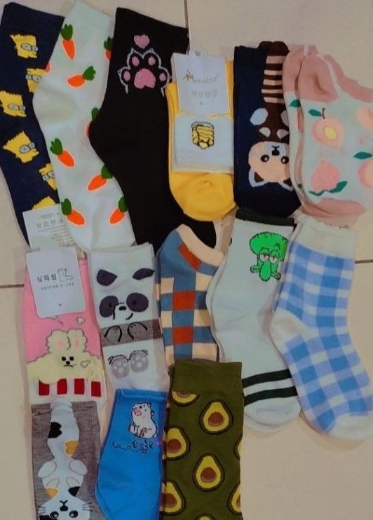
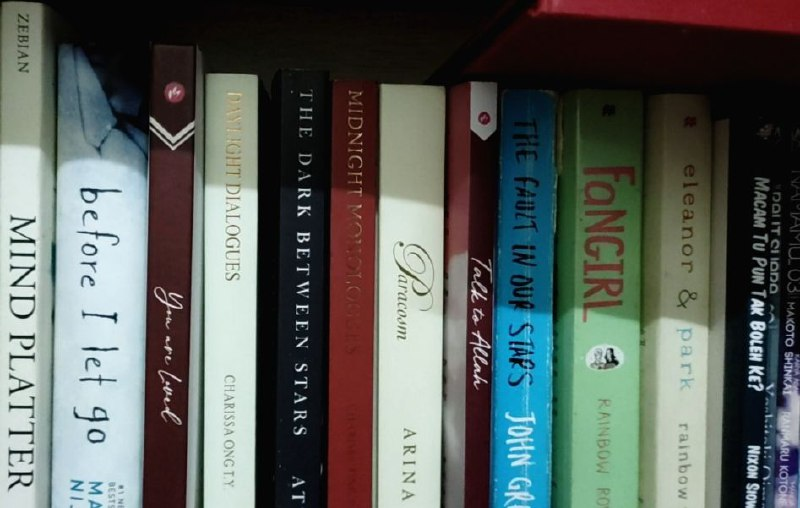
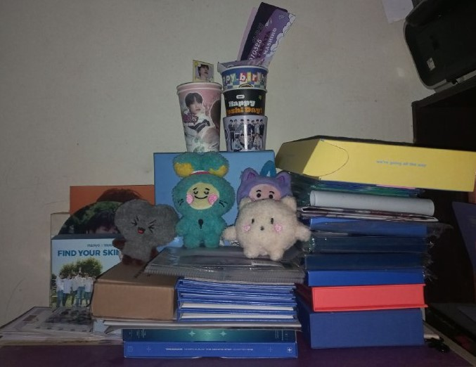
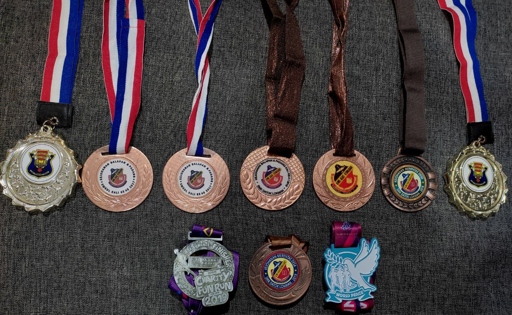

"👧EVERYDAY IS ANOTHER DAY OF FINDING WAYS TO LOVE MYSELF👧"
👧Let's see a little bit about me!👧
My full name is Nur Alya Maisarah Binti Syamzuri. My family call me "Sara" or "Kakak", however my friends and my lecturers often call me "Alya." I was born on 15 October 2002 in General Hospital Kuala Lumpur, a place where my mom's working. I currently further my study at Universiti Teknologi Mara (UiTM) Merbok, Kedah and I am a student under Diploma in Library Management. I am currently on my final semester. My favourite food is anything that my mom cooks, especially "Udang Masak Sambal" and "Ayam Masak Merah." On the other side, my favourite drink is "Sirap Bandung."
My current MBTI is ISFP and I am an introvert. However, when someone get to know me better, I would be the loudest introvert you will ever meet.😂 In terms of personality, based on my circle of friends and family, I am kind, quite shy, sometimes can be quite emotional, and I am a good listener.
👧MY CURRENT HOBBIES!👧
🔽
🔽
🔽
COLLECTING STOCKINGS
Hello my fellow Stocking Collectors!😆

Here's few of my stocking collections! I purchased mostly from SoxWorld Brand and through Shopee which made in Korea because the design are so cute!
READING BOOKS
Hello my fellow Bibliophile!😆

This is few of my book collections. In terms of poetry, I recommended poetry from Lang Leav and Najwa Zebian. It truly worth to buy any books from these two well-knwon authors.
COLLECTING K-POP MERCH
Hello my fellow K-popers!😆

I am currently a fangirl of "Treasure" (a South Korean Male Group). They literally became my source of inspiration. They also inspire me to study smart so that I am able to be a rich fangirl in the future meantime.🤣
Favourite Achievement in Co-Curricular Activities😁

These medals was all of my achievement in running competition and marathon. Running was my favourite sport even until now.😄